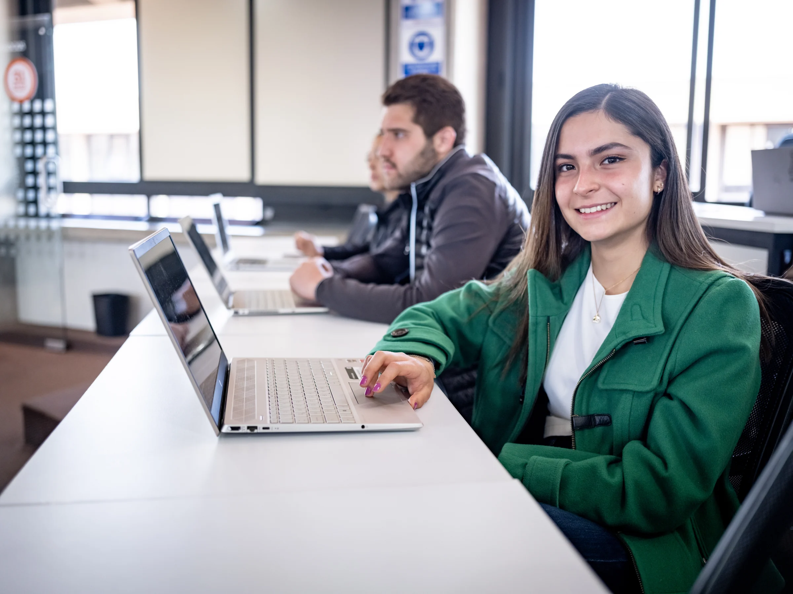

Clases en vivo con docentes
Participa en cada clase desde el aula virtual y aprende con interacción directa y acompañamiento docente.
Ejecutivas
Mejora. Actúa. Soluciona.
¿Es para ti?
La Licenciatura en Educación de la Universidad Anáhuac México es una licenciatura ejecutiva para personas que ya trabajan en docencia o formación y quieren profesionalizar su práctica. Dura tres años, en nueve cuatrimestres, con clases en vivo en aula virtual y horario vespertino. Es para ti si:
Ya trabajas en docencia o formación y quieres respaldar tu experiencia con una licenciatura.
Te interesa asumir responsabilidades de coordinación, gestión o dirección educativa.
Quieres aplicar nuevas estrategias de aprendizaje, neuroeducación y tecnología en tu trabajo.
Buscas combinar tus actividades laborales con una formación universitaria vespertina.
En la Universidad Anáhuac México desarrollas herramientas para diagnosticar, diseñar y evaluar proyectos educativos, con una visión humanista y aplicaciones en el entorno escolar, social y organizacional.
¿Por qué la Universidad Anáhuac México?
Fortalece tu práctica con una formación que conecta tu experiencia, los retos educativos actuales y el desarrollo integral de las personas.
Participa en cada clase desde el aula virtual y aprende con interacción directa y acompañamiento docente.
Cursa nueve cuatrimestres en tres años, con clases de lunes a jueves a partir de las 18:00 h.
Desarrolla experiencias prácticas a lo largo de tu formación y vincula tus proyectos con necesidades de tu entorno.
Integra conocimientos sobre aprendizaje, emoción, herramientas digitales y nuevas metodologías educativas.
Aprende a trabajar con niños, adolescentes y adultos, con y sin discapacidad, desde una perspectiva humanista.
La coordinación académica acompaña tu trayectoria y el trabajo en clase se conecta con situaciones de tu práctica profesional.
Prepárate para ser el profesional de la educación que quieres ser y la persona que quieres llegar a ser. Tu formación integra el Bloque Profesional y el Bloque Anáhuac, con tres Estadías para llevar el aprendizaje a la práctica.
Perfil de egreso
3Años de formación
9Cuatrimestres
Plan de estudios
El corazón de tu carrera. Desarrollas competencias pedagógicas, psicológicas, neuroeducativas y de gestión, con tres Estadías para aplicar tu formación.
Fortalece tu formación integral con materias sobre la persona, la ética, la responsabilidad social, el liderazgo y el desarrollo personal.
Campo laboral
Aplica tu formación en instituciones educativas, organizaciones sociales, empresas, consultorías y proyectos propios.
Fortalece tus herramientas para diseñar, gestionar y evaluar propuestas de aprendizaje con una visión ética, humanista y de servicio.
Recursos para tu formación
Complementa tus clases con los recursos y actividades virtuales de la Universidad.
Experiencias de nuestra comunidad de Educación.
Docencia y colaboradores
Aprende con docentes expertos y acompañamiento personalizado para fortalecer tu práctica educativa.
Nombre, fotografía y perfil pendientes de la Facultad de Educación y Humanidades.
Nombre, fotografía y perfil pendientes de la Facultad de Educación y Humanidades.
Nombre, fotografía y perfil pendientes de la Facultad de Educación y Humanidades.
Nombre, fotografía y perfil pendientes de la Facultad de Educación y Humanidades.
Siguiente paso
Conoce la inversión, explora apoyos económicos o habla con un asesor.
Calcula la inversión de tu licenciatura y conoce las opciones de pago.
CotizarDescubre las becas y apoyos económicos disponibles para estudiar aquí.
Ver apoyosResuelve tus dudas con un asesor preuniversitario, por campus.
ContactarPreguntas frecuentes
Sí. El programa está diseñado para personas que trabajan, con clases en vivo en aula virtual de lunes a jueves a partir de las 18:00 h. Cuentas con interacción directa con docentes y acompañamiento personalizado por la coordinación. Los proyectos académicos se vinculan con situaciones de tu entorno laboral.
Te prepara para diagnosticar, diseñar y evaluar proyectos educativos con una visión humanista, en el entorno escolar, social y organizacional. Con ella puedes crecer hacia la gestión educativa, la capacitación, la consultoría o emprender tu propio proyecto educativo.
Está dirigida a personas con experiencia en el ámbito educativo que buscan profesionalizar su trayectoria. El perfil de ingreso contempla una edad mínima de 23 años y al menos dos años de experiencia en educación. Es una licenciatura ejecutiva con clases en vivo en aula virtual y horario vespertino, distinta de la Licenciatura presencial en Pedagogía.
Dura tres años, distribuidos en nueve cuatrimestres. El plan tiene una secuencia fija de materias e integra el Bloque Profesional y el Bloque Anáhuac, con tres Estadías para aplicar tu formación.
Sí. La licenciatura cuenta con Reconocimiento de Validez Oficial de Estudios (RVOE) de la SEP. Los datos del acuerdo vienen en el folleto del programa.
El proceso contempla un examen psicométrico, un ensayo y una entrevista académica. El programa te orienta sobre los requisitos de ingreso y los pasos para continuar.
El programa contempla titulación integrada, sin requisito de inglés ni examen EGEL. Si es tu segunda licenciatura, puedes consultar la posibilidad de acreditar el servicio social de tus estudios previos. Confirma con el programa las condiciones aplicables a tu trayectoria y generación.
Existen posibilidades de becas y apoyos. Consulta el costo vigente del programa y las opciones aplicables a tu caso antes de iniciar tu inscripción.
Mucho más que solo una Universidad.
Complementa tu formación profesional con los recursos y la comunidad de la Universidad Anáhuac México.
Conoce la experiencia AnáhuacFortalece tu práctica educativa con una visión humanista centrada en la dignidad de la persona, la responsabilidad social y el liderazgo.
Apoya tus proyectos con la biblioteca digital, licencias de software y opciones de certificación adicionales como estudiante.

Comparte tu experiencia con docentes y compañeros, y complementa tu formación con webinars y seminarios virtuales.
Aplica tu formación en proyectos educativos y en las tres Estadías que integran el plan de estudios.


Solicita información
Conoce más sobre el plan de estudios, los apoyos disponibles y el proceso de ingreso al programa.